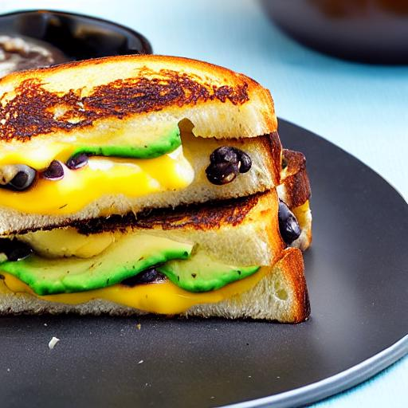

Black Bean Avocado Melt

Look at this melting cheese
Ooh yeah, beans, cheese, bread...
Ingredients
- ½ teaspoon (0 grams) chipotle powder
- 15 ounce (1 13⁄16 cups) canned black beans
- 1 avocado
- 4 ounce (½ cups) sharp cheddar cheese
- 6 tablespoon (83 grams) vegenaise
- 8 sourdough bread slice
Steps
- Halve the avocado, remove the pit, and slice the flesh. Drain and rinse the canned black beans. In a small bowl, mix together the Vegenaise, chipotle powder, and a pinch of salt. Mix the chipotle aioli well.
- Spread the chipotle aioli on each sourdough bread slice (this replaces butter or oil for browning). Place bread on the cutting board, aioli side down, and add ¼ of the sharp cheddar cheese to each of the two slices. Add half of the black beans on top of the cheese and mash slightly with the back of a fork. Top with sliced avocado and the remaining cheese, and add remaining bread slices on top, with the aioli-coated side facing up.
- Place a large nonstick skillet over medium-high heat. Add the sandwiches and cook until browned and crispy, about 2 to 3 minutes per side. Halve the black bean avocado melts and serve.
Back to index